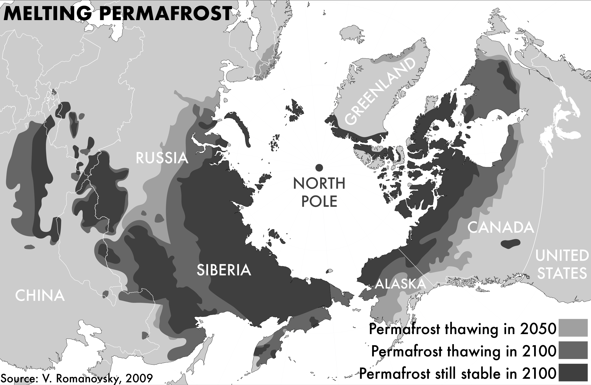
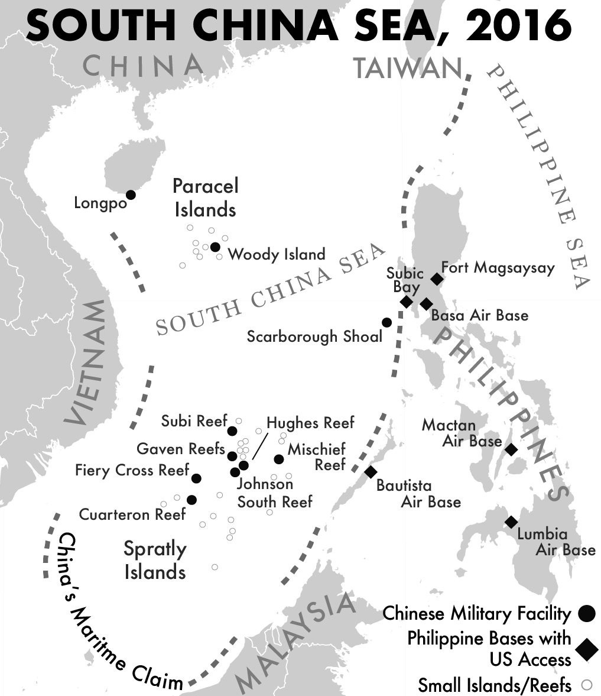

To Govern the Globe Textbook

These maps are four of the fifteen maps that I created for Dr. Alfred William McCoy, history professor at UW-Madison. Dr. McCoy requested these maps for his upcoming textbook, To Govern the Globe.
For these maps, I created a style guide to ensure consistency throughout the book. The guide included color, map projection, and typography. Additionally, all maps were constrained to black and white, providing me with the unique challenge of representing complicated subject matter with limited options.
The maps that I created spanned from the 1500s to the modern day. For each map, I consulted a number of reference maps provided to me by Dr. McCoy. During the design process, I had to make many choices about which maps to consult (sometimes different sources contained different data). Second, many of the reference maps were in color, and I translated this data to black and white.
